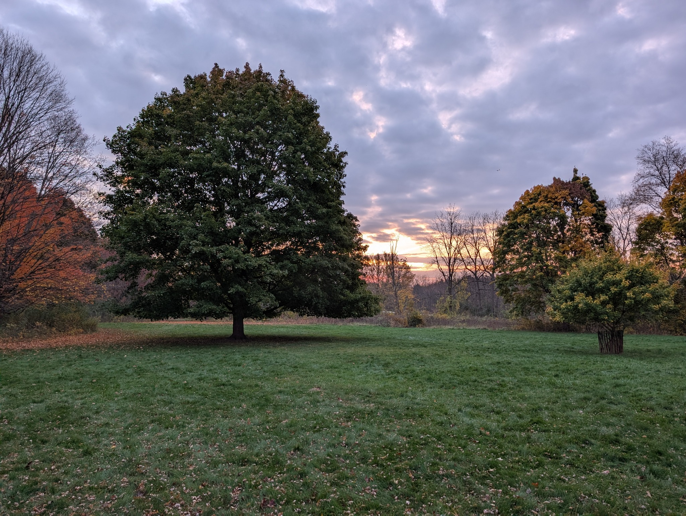

Volunteer-led • Milwaukee, Wisconsin
Milwaukee Sylvestral
Conservation Foundation
Care for the places that keep us rooted. A community of volunteers working to care for local parks, woodlands, and the living world beneath the canopy.
Conservation starts
with showing up.
We are a volunteer-led organization built around a simple idea: local natural spaces deserve care, attention, and people willing to lend a hand.
From community events to hands-on stewardship, our work is shaped by the people who take part. There is room for curious beginners, experienced naturalists, and everyone in between.
Meet the foundationMake a difference close to home
Healthy places take
all of us.
Volunteering can mean learning about native plants, helping at a community event, documenting a place through photography, or supporting the people doing the work.
Find your way to help
Find your place in the work.
Learn more, join an event, or see what our community is documenting.